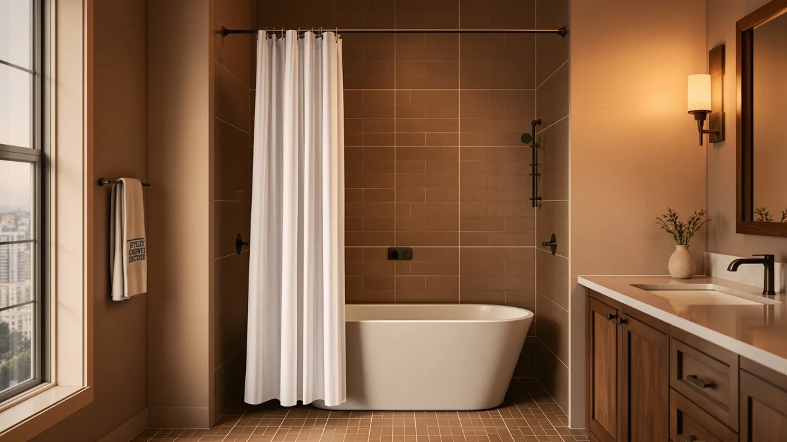

Best How to Hang a Shower Curtain (2026) | Best Shower Curtains


Things to Know Before You Buy
- You need two panels, not one. A waterproof liner hangs inside the tub to block splashes, and the decorative curtain hangs outside. Skip the liner and water runs straight onto your floor.
- Rod height decides everything. Mount the rod 75 to 77 inches off the floor so a standard 72-inch curtain clears the tub lip by about an inch.
- Tension rods save renters. A spring-loaded rod grips between two walls and holds both panels with zero drilling, so you avoid cracking tile or losing a deposit.
- Standard curtains run 72 by 72 inches. Measure your opening first, because stall showers, clawfoot tubs, and tall ceilings call for wider or 84-inch panels.
- Twelve rings is the magic number. Most curtains and liners punch 12 grommets, so a 12-pack of rings or hooks lines up hole for hole.
Knowing how to hang a shower curtain is the difference between a wet, sagging mess and a clean install you finish in under half an hour. You do not need a contractor or a drill in most bathrooms. You need a rod, a liner, the curtain itself, and a dozen rings. The trick is the order you work in and the height you set the rod, and that is exactly what trips up most people the first time.
I have hung curtains in three apartments, two of them rentals where drilling was off the table, and the same five steps worked every time. Below, you measure the rod height, mount the bar, thread the rings, hang the liner and curtain together, then adjust the drape so water drains back into the tub instead of onto the tile. Follow the sequence and you get a curtain that seals against splashes and hangs straight instead of billowing inward or pooling water at your feet.
What You'll Need
- Supplies: Shower curtain (72 by 72 inches for standard tubs), waterproof shower curtain liner, set of 12 shower curtain rings or hooks
- Tools: Tape measure, level (a phone level app works fine)
Step 1: Measure and mark the rod height
Before you hang a shower curtain, grab the tape measure and find where the rod belongs. Pull the tape from the floor straight up the wall and mark 75 to 77 inches on both the left and right sides of the opening. That window leaves a standard 72-inch curtain hovering about an inch above the tub rim, high enough to dodge standing water and low enough to seal the gap.
Check the curtain you bought before you commit to a number. A 72-inch panel is the default, but stall showers and clawfoot tubs sit higher, and an 84-inch curtain wants the rod closer to 84 to 86 inches off the floor. Hold the curtain against the wall at your marked height and eyeball the hem against the tub. If it drags inside the basin or floats six inches above the edge, adjust the mark now while it costs you nothing.
Step 2: Install the curtain rod
Now you mount the bar at the height you marked. A tension rod is the fastest route and the right call for renters. Twist the two halves apart until the rod is slightly wider than the opening, wedge one end against the wall at your mark, then compress the spring and seat the other end across from it. The internal spring pushes outward and locks it in place without screws or holes in the tile.
If you want a permanent fixed rod, hold each bracket at the marked spots, trace the screw holes with a pencil, and drill pilot holes before you drive the screws. Anchors matter here, because a rod loaded with a wet curtain and liner can pull a bare screw straight out of drywall.
Either way, lay the level across the top of the rod before you trust it. A rod that tilts even slightly sends every drop of water sliding toward the low end, and a fixed rod set crooked is a headache to redo. Adjust until the bubble centers, then give the rod a firm tug to confirm it holds.
Step 3: Thread the rings onto the rod
With the rod up, slide your 12 rings or hooks onto it before you bring the curtain anywhere near. This is the step people skip, and they pay for it by wrestling the whole assembly back down. Open each ring clasp and face the openings the same direction, toward you, so clipping the panels on is a single smooth motion.
Space the rings evenly along the rod as you go. Twelve rings across a 72-inch curtain lands one roughly every six inches, which matches the grommet spacing on almost every standard panel. If your rings are the round snap-shut type, leave them open. If they are the gliding hook style, just confirm each one rides freely so the curtain pulls back without snagging when you hang a shower curtain on this kind of hardware.
Step 4: Hang the liner and curtain
Here is where the two panels come together. Most rings carry two holes, an inner slot and an outer slot. Clip the waterproof liner to the inner holes so it ends up closer to the tub, and clip the decorative curtain to the outer holes so it faces the room. Work one ring at a time, lining up each grommet on both panels before you snap the clasp shut.
Start at one end and move steadily to the other rather than jumping around, which keeps the fabric from twisting. Once a clasp closes, give the panel a light downward tug to confirm it caught the grommet and is not just pinched on the fabric. A liner that slips off mid-shower is the most common reason a freshly hung curtain fails.
When all 12 rings hold both layers, step back and look at the line of grommets across the top. They should sit at the same level. If one panel rides higher than the other, you clipped a grommet out of sequence, so open that ring and reset it before moving on.
Step 5: Adjust the length and test the seal
The last step on how to hang a shower curtain is the one that decides whether your floor stays dry. Tuck the liner down inside the tub so its weighted hem rests against the inner wall, and let the decorative curtain fall on the outside. Smooth out any folds across both panels so they hang flat instead of bunching at the corners where water sneaks through.
Check the liner length against the tub. The hem should reach an inch or two inside the basin. Any lower and it piles up on the bottom and traps mildew; any higher and spray escapes under the rim. If your liner is too long, many have a row of snaps or you can trim the bottom; if it is too short, you set the rod too high in Step 1.
Run the shower for thirty seconds with the liner tucked in and watch the floor outside. Water should sheet down the inside of the liner and drain back into the tub. If you see drips on the tile, pull the liner fully inside the basin and confirm the rod sits level. A dry floor means the job is done.
Common Mistakes to Avoid
The biggest mistake people make when they hang a shower curtain is skipping the liner entirely. A single decorative panel looks fine until the first shower soaks your bathroom floor, because fabric curtains wick water straight through. You want the waterproof liner inside the tub doing the sealing and the pretty curtain outside doing the decorating.
Hanging the liner outside the tub is the second trap. When the liner drapes over the rim, water runs down its outer face and pools on the tile. Always tuck the liner inside the basin so runoff drains where it belongs. Setting the rod too low causes the opposite problem: the hem sits in standing water, wicks it up, and breeds mildew along the bottom edge within weeks.
Two more errors cost you a redo. Forgetting to thread the rings before you mount the rod means taking the bar back down, and rushing a tension rod without checking it with a level leaves you with a slow tilt that sends water to one corner. Take the extra minute on each. A curtain you hang straight the first time is one you never think about again.
Our Top Picks
The steps above work with any curtain, but the panel you choose still matters for how cleanly it hangs and how long it lasts. After comparing fabric weight and how flat each one drapes, these three cover the situations most people run into when they hang a shower curtain. Each one ships with reinforced grommets that grip rings without tearing.

Editor’s Pick
Seenus Waterproof Fabric Shower Curtain
A waterproof fabric panel with rustproof grommets that hold rings tight and resist tearing, so it hangs flat and seals well at a low price.
$11.35
Check Price on Amazon
Best Value
LiBa Bathroom Shower Curtain Waterproof
A weighted-hem liner under $10 that hangs flat against the tub wall and pairs with any decorative curtain. The cheapest way to get the seal right.
$9.99
Check Price on Amazon
Premium Choice
Extra Long Shower Curtain 84
An 84-inch panel for stall showers, clawfoot tubs, and tall ceilings where a standard 72-inch curtain leaves an awkward gap above the floor.
$18.89
Check Price on AmazonFrequently Asked Questions
How high should you hang a shower curtain?
Mount the rod 75 to 77 inches above the floor for a standard 72-inch curtain. That leaves the bottom hem hovering about an inch above the tub edge, close enough to trap water but high enough to stay out of standing puddles. For an 84-inch curtain or a tall stall, raise the rod to roughly 84 to 86 inches.
Does the shower curtain liner go inside or outside the tub?
The liner hangs inside the tub and the decorative curtain stays outside. When you shower, tuck the liner against the inner wall so runoff drains back into the basin instead of pooling on the bathroom floor. This is the single change that fixes a wet floor for most people.
Can you hang a shower curtain without drilling holes?
Yes. A spring-loaded tension rod wedges between two walls and holds a curtain and liner without any hardware, which makes it the go-to choice for renters and tile surfaces you would rather not drill into. Set it at your marked height, compress the spring, and check it with a level before you load the panels.
What size shower curtain do I need?
A standard tub takes a 72 by 72 inch curtain. Measure your opening first, because stall showers, clawfoot tubs, and high ceilings often call for a wider panel or an 84-inch length. When in doubt, size up: a curtain that is slightly too long tucks neatly, while one that is too short leaves a gap for spray to escape.
Do I need both a curtain and a liner?
For a fabric curtain, yes. The waterproof liner does the sealing and the decorative curtain handles the look. If you use a single vinyl or PEVA waterproof curtain on its own, you can skip the liner, though you lose the layered look and the liner is easier to swap out when it gets grimy.
Verdict
Learning how to hang a shower curtain comes down to five moves done in order: measure the rod at 75 to 77 inches, mount and level the bar, thread the rings before you load anything, clip the liner inside and the curtain outside, then tuck the liner into the tub and test the seal. Skip the liner or set the rod crooked and you fight a wet floor for months. Get the sequence right and you finish in half an hour with a curtain that hangs flat and keeps water where it belongs. If you also want a panel that holds rings tightly and drapes cleanly from day one, the Seenus Waterproof Fabric Shower Curtain is the easiest pick to start with, thanks to its rustproof grommets and budget price. Pair it with a weighted liner, follow the steps above, and you will not think about your shower curtain again until it is time to toss it in the wash.